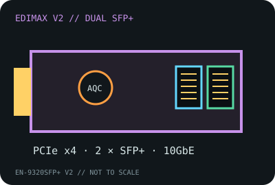

[ MODEL-SPECIFIC NETWORK HARDWARE RECORD ]
Edimax EN-9320SFP+ V2 Dual-Port 10GbE Adapter
A two-port SFP+ PCIe adapter. The transceiver or DAC is a separate component and must match the card, peer, fiber plant and supported driver.

IDENTIFICATION: Exact card model EN-9320SFP+ V2. Do not treat the suffix-free EN-9320SFP+ or another brand’s AQC100 implementation as the same card or support package.
Exact SKU, interface and compatibility
| Exact model / SKU / revision | Edimax EN-9320SFP+ V2, dual SFP+ PCI Express 10GbE network adapter. |
|---|---|
| Controller | Marvell FastLinQ Edge AQC100 family, as identified for the V2 adapter; verify the chip marking and PCI device ID on an individual board. |
| Bus, ports and connectors | PCI Express Gen 3 x4; two SFP+ cages. Optical LC-duplex or direct-attach cable connectors are on the separately selected transceiver/DAC, not directly on the card. |
| Per-port link rates | 10GbE per SFP+ port with a compatible 10GbE module or DAC. Lower-speed support depends on module, link partner and driver; do not assume 1GbE/2.5GbE/5GbE support from the SFP+ cage alone. |
| Driver and operating systems | Use the Edimax V2 Marvell FastLinQ Edge driver package. Its archived matrix lists Windows 7/8.1/10, Windows Server 2008 R2/2012/2012 R2/2016, Linux 2.6/3.x/4.x, macOS 10.10–10.12 and ESXi 5.1/5.5/6.0; confirm the PCI ID and driver availability for current OS releases. |
| Optics and compatibility caveats | Choose a supported SFP+ module or DAC for the intended wavelength, reach, fiber type and peer coding. Monitor airflow and temperature; unsupported optics, incompatible DACs, or wrong fiber can prevent link-up. |
| Revision warning | V2 is part of the exact model. Keep the PCB version, controller marking, bracket and driver version attached to any compatibility report. |
Link qualification
Each port has a nominal 10GbE signaling rate; aggregate throughput is not guaranteed. For optical testing, record module vendor/SKU, wavelength, fiber grade, connector, link partner and driver. For DAC, record cable length and both end identifiers.
Edimax V2 datasheet and installation guide
- Edimax EN-9320SFP+ V2 datasheet (PDF)Manufacturer model-specific technical document.
- Edimax EN-9320SFP+ V2 Quick Installation Guide (PDF)Manufacturer installation and driver guidance for this revision.
- Edimax EN-9320SFP+ V2 product pageManufacturer product identity and revision context.